Bewitched was a semester long project along with a moderately sized team of fourteen members. It was my first experience at a 'Triple A' quality of game production, where in the studio-like class our team was represented as the larger team project. I served as the Lead Design, initial systems designer, Technical Writer, and Narrative Designer.
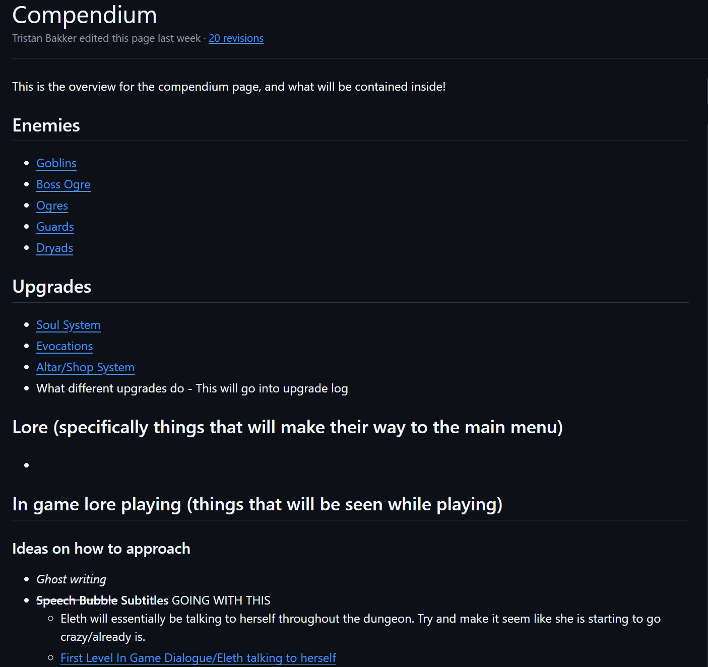
One of the issues the team had with our high-effort game was selling the plot behind our game and giving more background information about it. People were interested in what the different monsters and enemies were doing in the dungeons. The Art lead and I came up with the idea of a compendium, an interactive menu to learn more about the systems of the game and everything you would encounter. The connecting image is a screenshot of a lot of our compendium pages that were written up in our GitHub project repo, where I spent a lot of my time, making sure everything was properly updated.
This sometimes included going way back to pages that had been created weeks or even months ago to change the names of different terms that had been altered for clarification or other reasons, such as double naming.
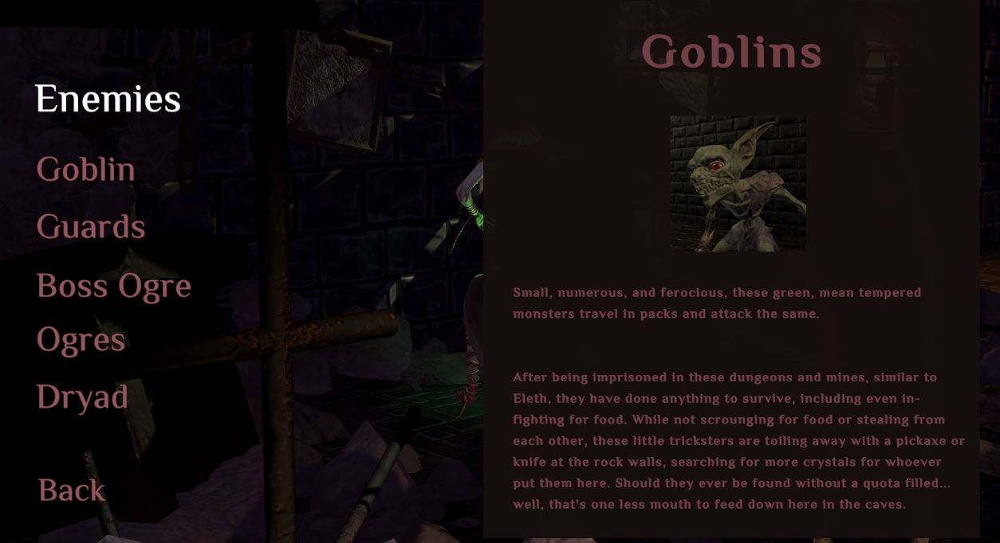
Sectioned here is an example of the final product of our compendium pages. I spent a good amount of time getting all of the photos for each enemy set up and properly explain to the players what each item does. I first wrote everything up in our technical documents in our GitHub repo, as seen in the image above, and then later ported it into the game once it was approved.
During the process of creating the compendium in the menus, I consistently sought advice and check ins from our UI/UX specialist to make sure that everything was up to the team’s standard of quality and that it would match her own work in other areas of the game. One of those decisions we came up during these check-ins was the addition of the always present navigation bar on the left-hand side after coming up with a few different kinds of solutions, such as a prototyped version of the navigation menu at the top of the screen running horizontally.
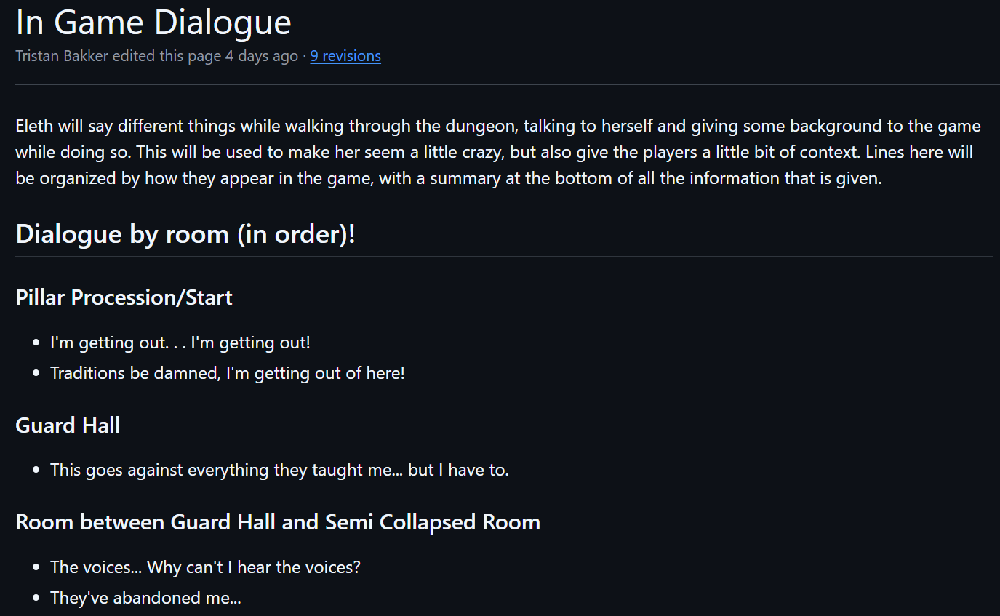
Further past the compendium, the Art lead and I wanted ways to introduce some of the concept of this witch named Eleth to be losing her mind due to her imprisonment. Initially, we thought about implementing different kinds of interactable objects throughout the game, like little ripped up letters or writings. However, we started to run into art chokepoints, where we didn't have the time to implement such items. To adapt to this, we instead chose to go for a spoken option, where it would seem as if our player character was talking to herself throughout the dungeon, descending into madness while going against some moral code of hers.
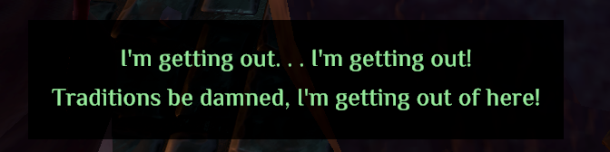
As seen in the next image, we came up with this green text to show up in the UI for the player to read, where they would then appear when walking into specific triggers throughout the level. I placed these in the desired locations to make the narrative feel natural. Below are other images to show the trigger elements and what the scripted object looked like that we could update to alter the narrative.
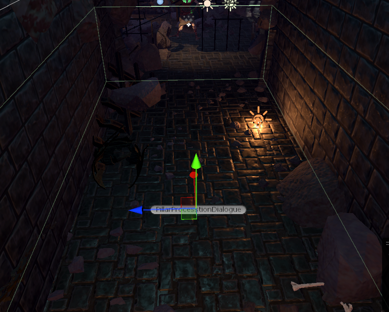
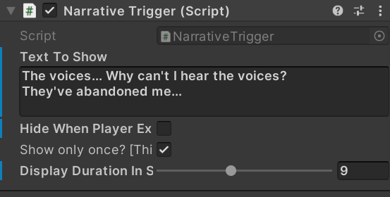
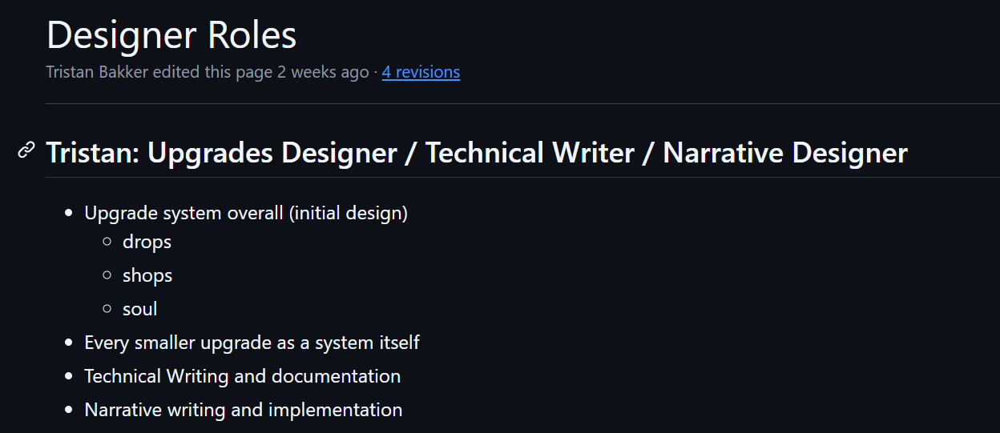
While on this project I was also the Lead Designer for the project, which meant that I oversaw the other designers' work and made sure that their effort would get into the project seamlessly. This involved sitting in on every design meeting, usually with a moderate to large amount of input, providing feedback on any systems that had been designed or requested of programmers, and making sure that our designers also had a clear overview of the project as a whole.
A troublesome spot that I had to overcome at one point was when one of our designers was asking for a certain kind of combat system part-way through development and was something that had not been previously mentioned, at least not in a formal capacity. During the exchange with one of our programmers, I was able to summarize and provide feedback on the fly about the initial design that was requested, and make sure that both our designer got the tools they were asking for, and make sure that our programmer understood what the purpose of the decision was trying to do, while also making sure that they weren't overloaded with tasks and what was being asked of them.
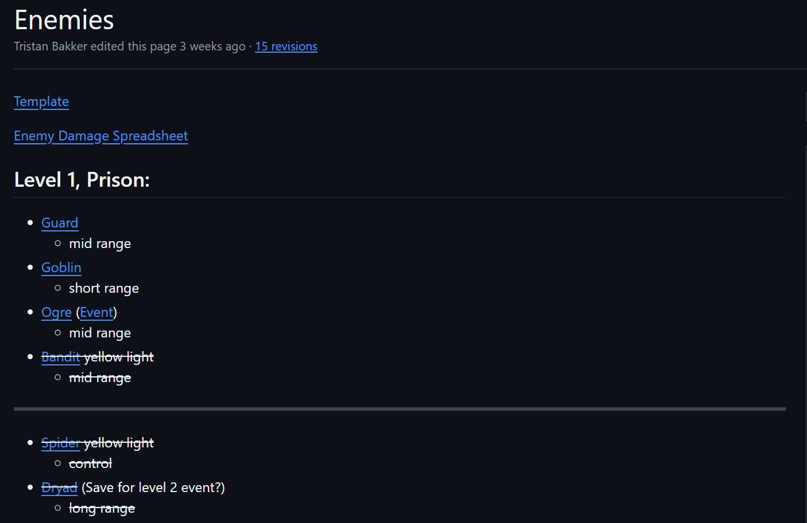
During the early days of the project, I was in charge of designing a majority of the enemies and their abilities. I decided what they did, how they behaved, how they interacted with the player, and how their different abilities could be utilized by the player.
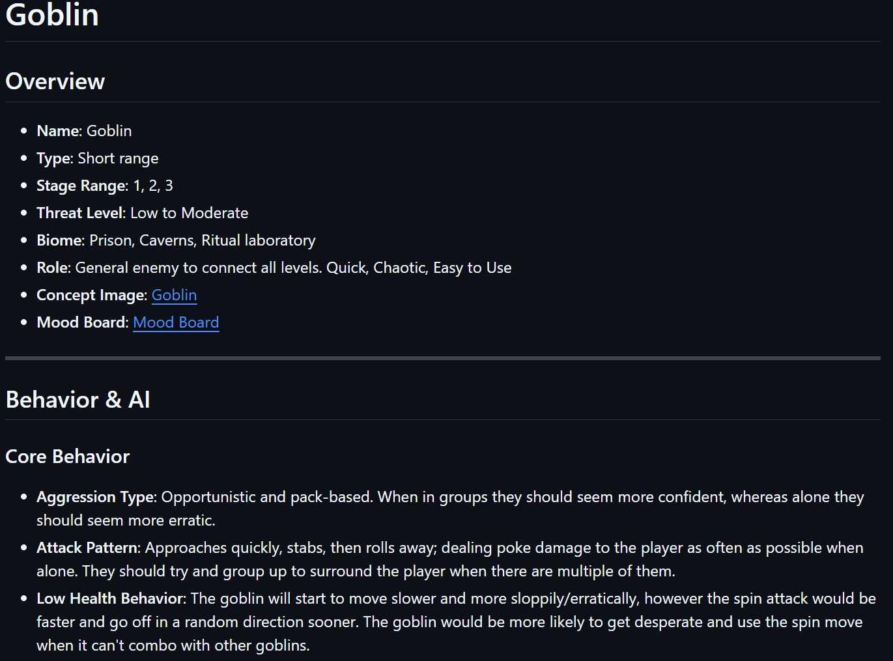
For example, the Goblin was one of our earlies designs. They were intended to move quickly and in packs, to try and surround the player and be nimble with their stabs. It was initially designed for our prototype to have a dash attack that would send them through multiple enemies and out the other side, but once the project moved to the new 3D environment, players felt that unsatisfying, so we had to adjust. With the help of other designers and our lead enemy AI programmer, I came up with a spin attack where they would bounce off of other characters and the environment, making them seem wild and desperate, really selling our intentions for their wild and wackiness a lot better.
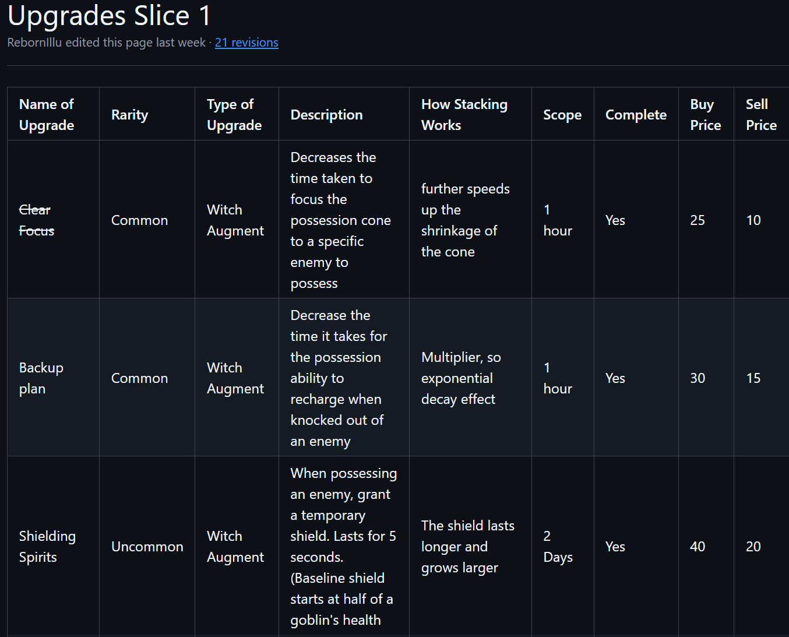
I was also in charge of the design of our Evocations system, our way of allowing the players to upgrade themselves throughout each playthrough of the game. During the pre-production stage and early stages of production, I came up with many different upgrade ideas, some focused around specific enemies, others assorted stat increases, and a few general changes across the board.
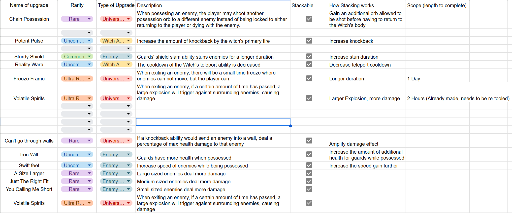
Here you can see a load of my different ideas during pre-production, with the eventual shift into what they became above. Part-way through the production cycle of the game, it was realized that the team wouldn't have as much time for the evocation system as we would have liked, so we had to cut down on how much we were doing, and this affected what we would produce greatly. The producer, other designers, and I put heads together, and decided to focus our upgrades on the different mechanics of the game or introduce new ways to play the game, rather than make certain playstyles stronger or weaker. With this in mind, I set about selecting from our long list for what would make the cut, and re-tooling a few old ones into something that would fit our new design focus more accurately. For example, I eliminated the guard enemy's increased stun duration and made a rarer upgrade that affected the damage and stun when hitting an enemy during their windup of an attack, making it more interesting to play with, and usable in more situations.
Throughout the process of the game's production, I served as the Lead Designer, Enemy Designer, Systems Designer, Technical Writer, and Narrative Designer all at different points. I wore a lot of different hats and cycled through many different tasks, but always with enthusiasm and vigor. I also learned a lot, especially about working with a large-scale team and a new type of management system. It was often that I would speak with different production leads about general questions and make sure to ask specific individuals about their work to make sure that everything throughout the game's production was consistent and well updated. I also learned how to work in a situation where there were many different ideas circulating around and try to make sure that everyone was happy about decisions that had been made.